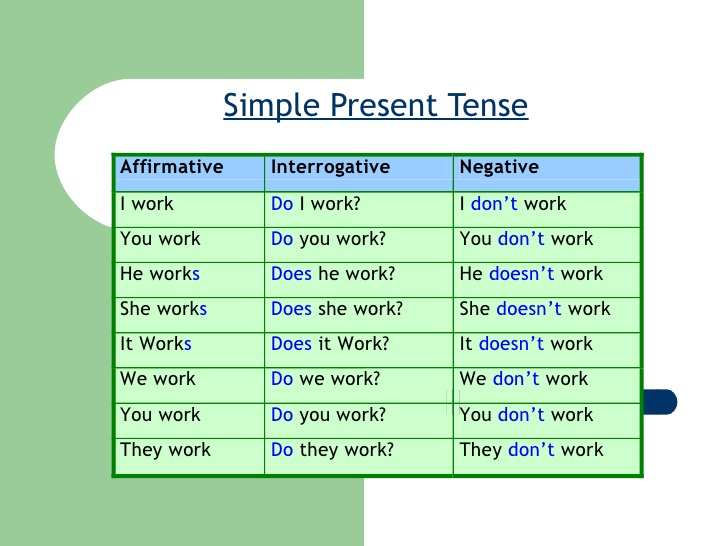
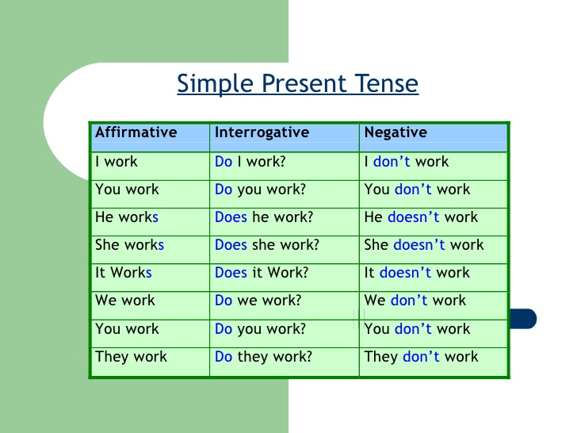

Simple Present
Não se assuste! Até porque, vamos ver exatamente o que você já sabe, e usou esse módulo inteiro, mesmo que sem perceber. Para descrever a rotina do Neymar, usamos o simple present, que consiste basicamente...
Não se assuste! Até porque, vamos ver exatamente o que você já sabe, e usou esse módulo inteiro, mesmo que sem perceber. Para descrever a rotina do Neymar, usamos o simple present, que consiste basicamente...
